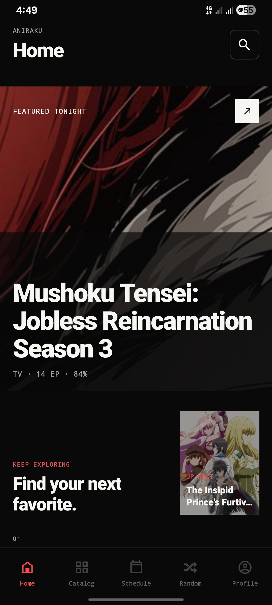
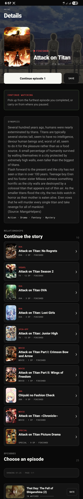
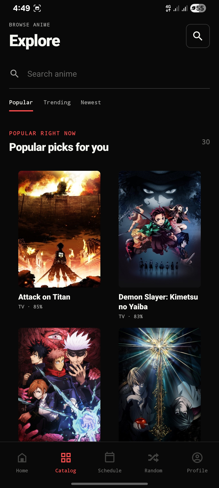
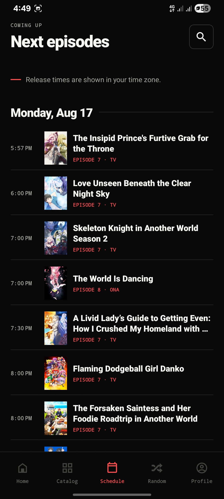
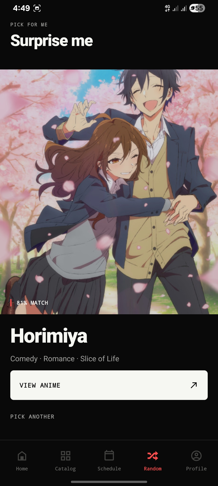
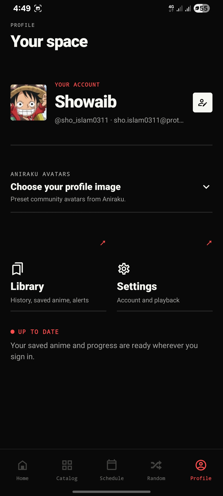
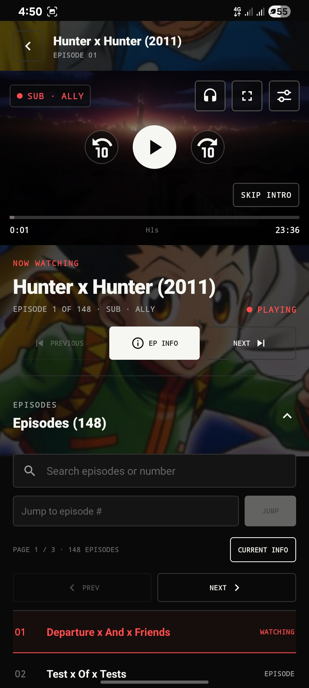

01HOMESTART DISCOVERING

HOME / FEATUREDAn editorial starting point that gives one title room to breathe before discovery expands.
- ANIRAKU eyebrow
- Featured artwork
- Match metadata
- Search action
- Native dock
V4.1.1 / STABLE HOTFIXAnime Detail stability repaired. Relationships, discovery, and Watch stay native.
READ RELEASE NOTES ↗ANDROID / FOSS / V4.1.1 DIRECT DISTRIBUTION
A native Android home for discovery, source-aware playback, your watch history, and the full story around a title—not just the first season.
● REAL SCREENS · REAL RELEASE · NO GENERATED UI

02 / REAL INTERFACE SCREEN MAP
These are real Android captures, not generated mockups. Each panel carries a compact UI map so you can see both the screen and the job of every important element.
8 CAPTURED FLOWS / 1 NATIVE SYSTEM
HOME / FEATUREDAn editorial starting point that gives one title room to breathe before discovery expands.

EXPLORE / CATALOGSearch and browse live in the same calm surface, with clear filters and readable poster metadata.

SCHEDULE / TIMELINEA date-led release timeline for the episodes that are about to arrive in your local time.

RANDOM / DECIDEOne deliberate recommendation when an endless grid is not the decision you want to make.

PROFILE / LIBRARYYour identity, avatar, library, playback settings, and sync confidence stay together.

WATCH / MEDIA PLANEPlayback controls are native, source-aware, and paired with an episode browser that respects large series.
03 / ANIME DETAIL CONTEXT, NOT CLUTTER
Anime Detail keeps the immediate decision close—continue, save, read, or choose an episode—then opens the connected story below it. v4.1.1 stabilizes the transition into this screen while retaining the new relationship map.
Artwork, status, type, episode count, and match percentage establish the title at a glance.
Continue the furthest completed episode, save the title, or start a specific episode.
Prequels, sequels, OVAs, movies, specials, spin-offs, and related titles appear as linked native cards.
Large titles remain paged, with progress and rating available on individual rows.
04 / WATCH THE MEDIA PLANE
Source discovery can take time. Aniraku preserves episode context while a playable route resolves, then puts the controls that matter inside the player without covering the episode flow.
HEADPHONESAudio and provider choices, including SUB and DUB.
SETTINGSQuality, Auto Next, Auto Skip, and playback speed.
EPISODESSearch, direct jumps, paging, and current-episode context for long-running titles.
PLAYER CONTEXT STAYS WITH THE EPISODE
05 / INSTALL V4.1.1
Download the current stable universal build directly from GitHub Releases or use Orion Store. The package supports Android 9 and newer on both 32-bit and 64-bit ARM devices.
06 / DOCUMENTATION USEFUL DETAILS
Direct release notes, source, installation guidance, privacy terms, and a safe place to report an issue.
Source availability comes from third-party providers and the backend runs on a free cloud instance. If discovery is slow, wait briefly, choose another listed provider, or use a lower available quality.
The update repairs the Anime Detail transition that could show a hook-order error while a title finished loading. Relationship cards, their labels, and connected-detail navigation remain intact.
Only if the package is the same. Older builds using aniraku.anine.app must be uninstalled first because stable Aniraku uses aniraku.anime.app.
Use the official GitHub Release download on this page or Orion Store, then confirm the Android installer names the package aniraku.anime.app. Do not install APKs shared through unknown mirrors. Review the published Security Policy to report a vulnerability responsibly.